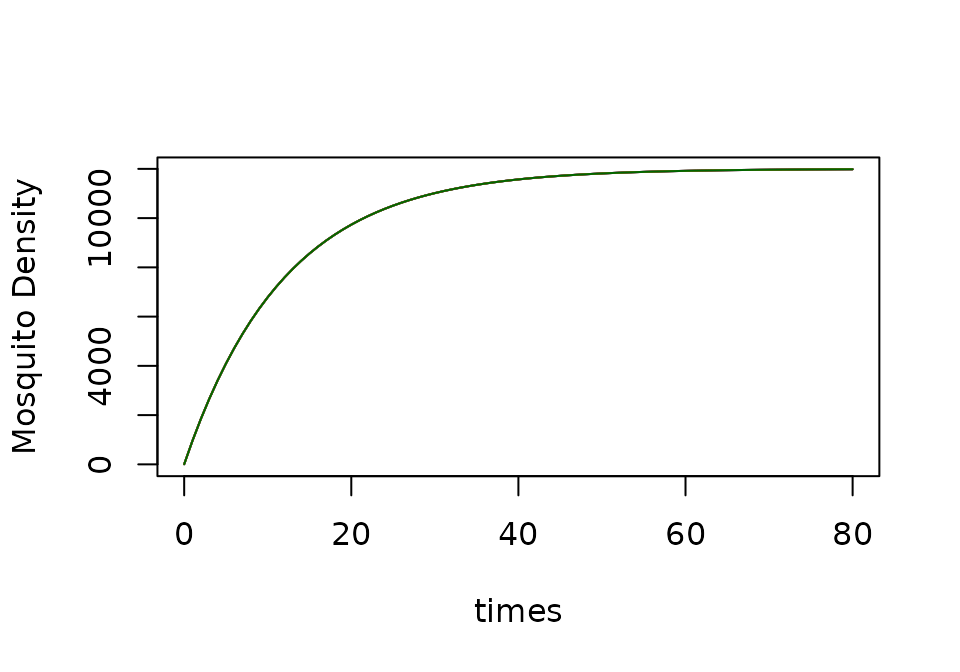
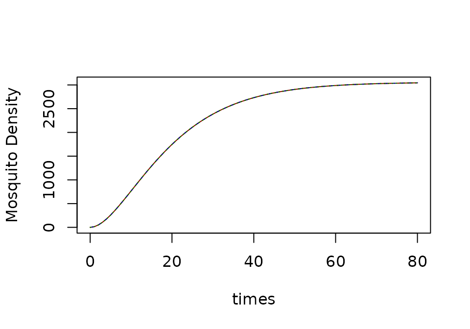
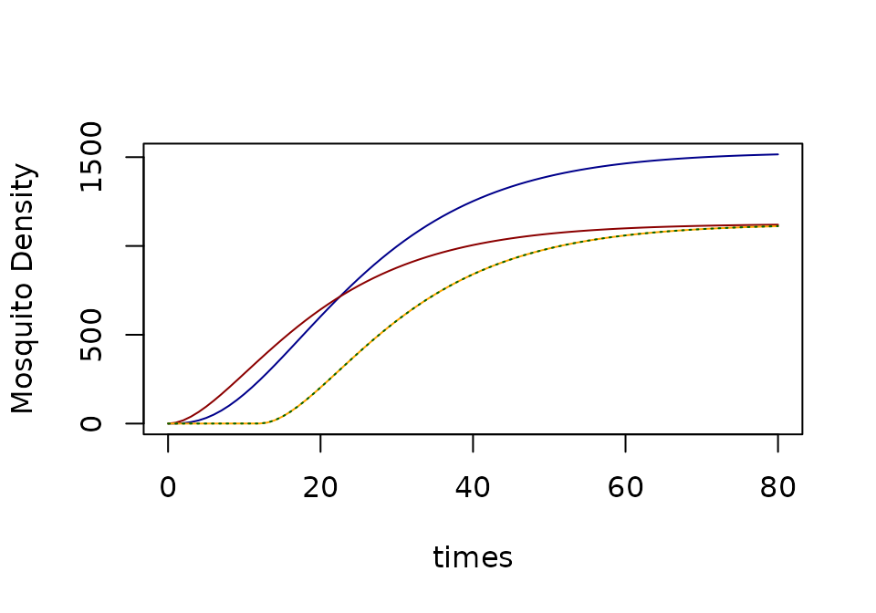
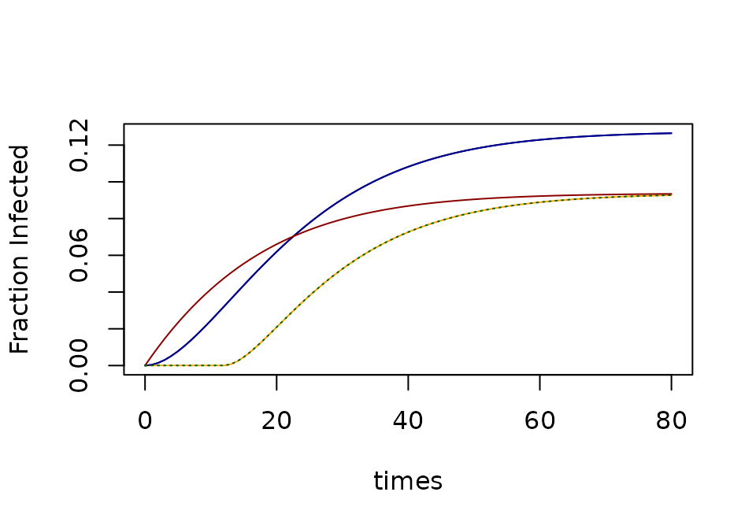
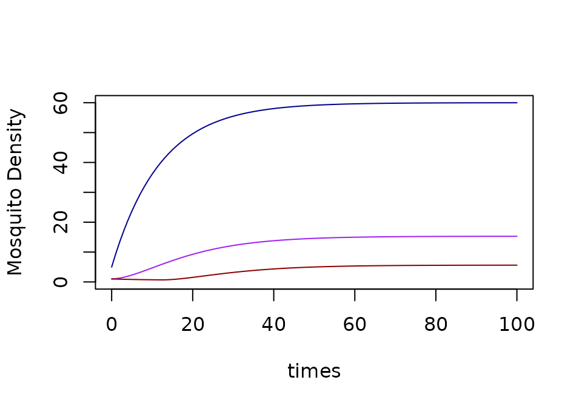
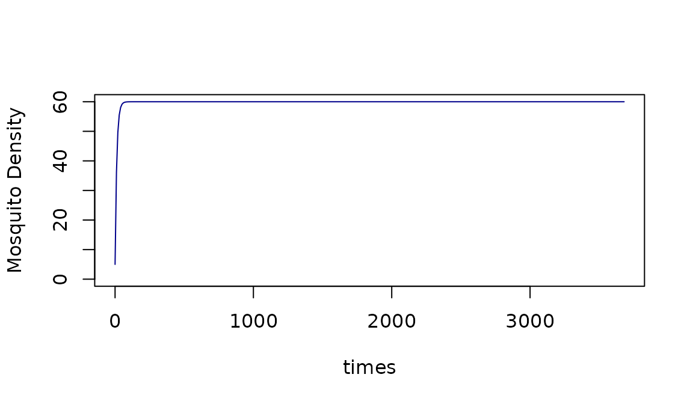

ramp.xds includes five modules
describing adult mosquito ecology, behavior, and infection dynamics.
They were included to illustrate some of the core concepts and design
features of ramp.xds, particularly the
issue of extensibility in non-autonomous systems,
where we are concerned about combining the effects of exogenous
forcing and vector control to develop models that can
regard malaria transmission as a changing baseline that has
been modified by control.
ramp.library
includes an expanded set of models for adult mosquitoes, including
models with mosquito chronological or reproductive age, and behavioral
state models (see MYZ-Overview).
The dynamical terms required by $\cal MYZ$ models are:
Lambdaor - the emergence rates of adult mosquitoes in the patcheskappaor - net infectiousness (NI), the probability a mosquito becomes infected after blood feeding on a human. The dynamical terms output by $\cal MYZ$ models are:F_fqZoutputs the number of bites by infectious mosquitoes, per patch, per dayF_fqMoutputs the number of bites by mosquitoes, per patch, per dayF_eggsoutputs the number of eggs laid by mosquitoes, per patch, per day
In this vignette, we discuss the challenge of extensibility, in particular, the challenges of modeling malaria transmission by mosquitoes as a changing baseline that has been modified by vector control.
The models in ramp.xds were included
for several reasons:
They serve as an important set of models to test the software;
They illustrate some important basic features of
ramp.xdsdesign princples (see Nimble Model Building and Scalable Complexity).
Basic Models
All five models use a common set of parameters:
the parasite’s extrinsic incubation period (EIP)
the patch-specific overall feeding rates
the patch-specific human fraction
the patch-specific mortality rate
the patch-specific emigration rate
patch-specific mortality associated with emigration
patch-specific egg-laying rates
$\cal K$ a dispersal matrix
ramp.xds there are several versions of
basic models for mosquito infection dynamics. These models make similar
assumptions about mosquito ecology and infection dynamics. (The
equations are in the documentation for The four models are
-
GeRM. This implements a fully generalized, non-autonomous version of the Ross-Macdonald model. The base model was the delay differential equation Ross-Macdonald model presented by from Aron & May (1982). It has been extended to include generalized exogenous forcing and egg laying, as described by Wu SL, et al. (2023): the baseline values of bionomic parameters (generically ) are evaluated by a function The equations were formulated using novel built-in numerical algorithms to compute survival and dispersal through a time-varying extrinsic incubation period.
GeRM <- xds_setup(Xname = "trivial", Xopts = list(kappa = .1),
MYZname = "GeRM", MYZopts = list(Y=0, Z=0))
GeRM <- xds_solve(GeRM, Tmax=80)-
rm- This version of the Ross-Macdonald model, as a system of delay differential equations, that follows the formulation by Aron & May (1982), which allows for mosquito population density to fluctuate, forced by emergence . The model has been included as a teaching model with the warning that it is not extensible: the parameters are assigned static values, so it can not accommodate exogenous forcing of the bionomic parameters.
macdonald <- xds_setup(Xname = "trivial", Xopts = list(kappa = .1),
MYZname = "macdonald", MYZopts = list(Y=0, Z=0))
macdonald <- xds_solve(macdonald, Tmax=80)
+ [**`basicM`**](https://dd-harp.github.io/ramp.xds/reference/dMYZdt.basicM.html) is based on **`GeRM`,** but it lacks variables describing infected or infectious mosquitoes.
``` r
basicM <- xds_setup(Xname = "trivial", Xopts = list(kappa = .1),
MYZname = "basicM")
basicM <- xds_solve(basicM, Tmax=80)-
siis a basic SI compartmental model for infection in mosquitoes that was set up to accommodate a static baseline with exogenous forcing by vector control. It assumes that the density of infectious mosquitoes is the density of infected mosquitoes modified by survival and dispersal through an EIP, computed with present parameters
SI <- xds_setup(Xname = "trivial", Xopts = list(kappa = .1),
MYZname = "SI", MYZopts = list(Y=0))
SI <- xds_solve(SI, Tmax=80)-
SEIis a standard SEI compartmental model that is fully parameterized for exogenous forcing.
SEI <- xds_setup(Xname = "trivial", Xopts = list(kappa = .1),
MYZname = "SEI", MYZopts = list(Y=0, Z=0))
SEI <- xds_solve(SEI, Tmax=80)Ecology
The ecology for basicM and si and
SEI and rm is identical. Let
denote the density of adult mosquitoes,
the emergence rate of adult mosquitoes from aquatic habitats, and
the adult mosquito mortality rate. Mosquito population density is
described by an equation:
If then is a vector and we formulate a demographic matrix as described in Spatial Dynamics of Malaria Transmission (2023) PLoS Computational Biology. The models have four parameter families:
the patch-specific daily mortality rates (the probability of surviving one day is
is a patch-specific daily emigration rate
is the a patch-specific proportion lost through migration
$\cal K$ is a mosquito dispersal matrix
$$\Omega = \mbox{diag}\left(g\right) + \left[ \mbox{diag}\left(1-\mu\right) - {\cal K} \right] \cdot \mbox{diag}\left(\sigma\right)$$ Note that if , then . This gives us the more general formulation:
If is constant, then the equation has a steady state:
xds_plot_M(basicM)
xds_plot_M(SI, add=TRUE, clrs="darkred")
xds_plot_M(SEI, add=TRUE, clrs = "darkblue")
xds_plot_M(macdonald, add=TRUE, clrs = "orange")
xds_plot_M(GeRM, add=TRUE, clrs = "darkgreen")
Infection
The infection dynamics for si and SEI and
rm are identical. (The model basicM does not
define a variable
).
The dynamics of infection depend on a quantity that we will call denoting the net infectiousness (NI) of humans, or the probability a mosquito becomes infected after blood feeding on a human. Let denote the overall blood feeding rate, and let denote the fraction of blood meals on humans (a.k.a the human fraction). Let denote the density of mosquitoes that are infected with parasites, and its dynamics are described by:
xds_plot_Y(SI, llty=1, clrs="darkred")
xds_plot_Y(SEI, add=TRUE, llty=2, clrs = "darkblue")
xds_plot_Y(macdonald, add=TRUE, llty=3, clrs = "orange")
xds_plot_Y(GeRM, add=TRUE, llty=3, clrs = "darkgreen")
If and have reached the steady state, then the fraction of infected mosquitoes, is given by:
and the fraction of infectious mosquitoes (i.e. with sporozoites in their salivary glands), is called the sporozoite rate,
Infectiousness
Let denote the density of mosquitoes that have sporozoites in their salivary glands, and let denote the time elapsed between the blood meal that infects a mosquito and the point in time when a surviving mosquito has sporozoites in its salivary glands. The probability a mosquito has survived days is , and we let a subscripted denote the value of a variable at time
- In
rmthe density of infectious mosquitoes is modeled by:
- In the
simodel, the density of infectious mosquitoes has ignored the delay, but it discounts biting by the fraction that would survive (and disperse) through the EIP. To put it another waysiandrmwould have the same steady state if autonomous model.
- In the
simodel, the density of infectious mosquitoes has ignored the delay, but it discounts biting by the fraction that would survive (and disperse) through the EIP.
xds_plot_Z(SEI, llty=1, clrs="darkblue")
xds_plot_Z(SI, add=TRUE, clrs = "darkred")
xds_plot_Z(macdonald, add=TRUE, clrs = "orange")
xds_plot_Z(GeRM, add=TRUE, llty=3, clrs = "darkgreen")
xds_plot_Z_fracs(SEI, clrs="darkblue")
xds_plot_Z_fracs(macdonald, add=T, clrs = "orange")
xds_plot_Z_fracs(SEI, add=T, clrs="darkblue")
xds_plot_Z_fracs(SI, add=T, clrs = "darkred")
xds_plot_Z_fracs(GeRM, add=TRUE, llty=3, clrs = "darkgreen")
This is equivalent to Macdonald’s formula.
In ramp.xds this set of equations is
implemented. This sets up and solves a model with
and
passed as constant values, and a human population density of
macdonald = xds_setup(Xname = "trivial", Xopts=list(kappa=0.1), Lname = "trivial", Lopts = list(Lambda=5), HPop=10)
macdonald = xds_solve(macdonald, Tmax=100)
xds_plot_M(macdonald)
xds_plot_Y(macdonald, add=TRUE)
xds_plot_Z(macdonald, add=TRUE)
Macdonald’s Formula
If we wanted to replicate Macdonald’s equations, we would let , or equivalently , and so:
Lo = list(season = function(t){1+sin(2*pi*t/365)},
trend = function(t){exp(-t/1000)},
Lambda =5)
macdonald = xds_setup(Xname = "trivial", Xopts = list(kappa=0.1), HPop=10,
Lname = "trivial", Lopts = Lo)
macdonald <- xds_solve(macdonald, 3680, dt=10)
xds_plot_M(macdonald)